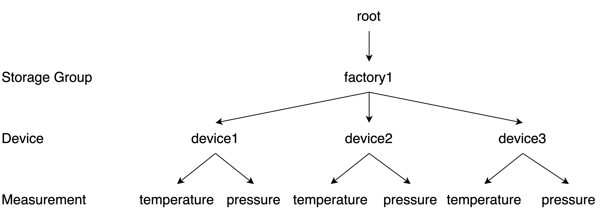
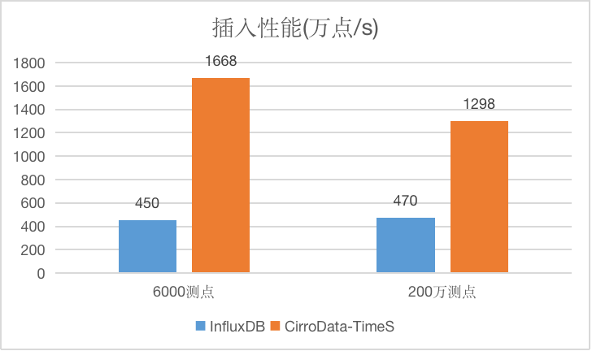
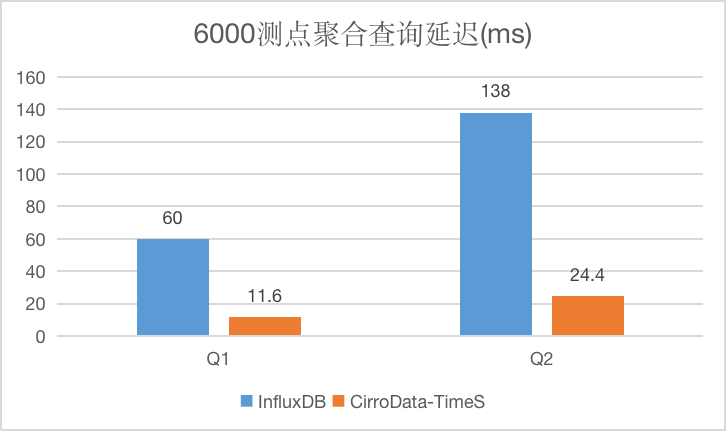
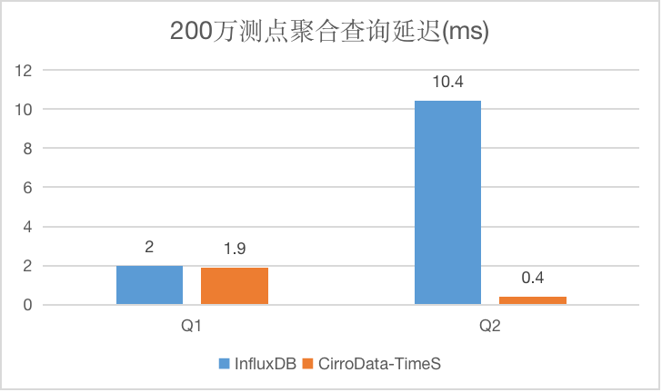
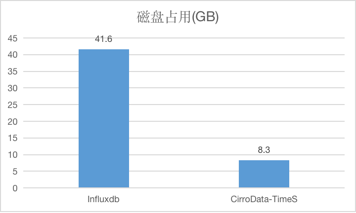
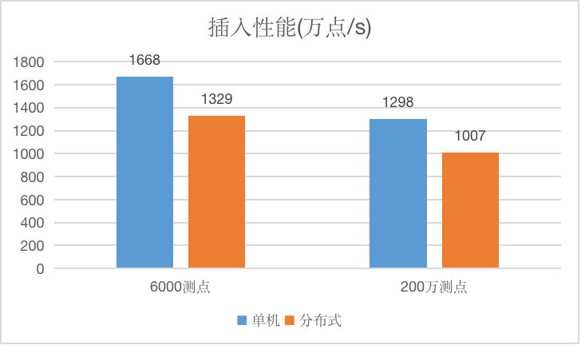

背景
根据IDC[1]最新预测，截止到2025年，全球物联网设备可达416亿个，产生约79.4ZB的数据。正如该报告指出，随着联网的设备越来越多，这些设备产生的数据也越来越多。这些数据都有一个共同的特性：数据是时序的，即一定带有时间戳，称之为时间序列的数据。
时间序列在维基百科的定义是一组按照时间发生先后顺序进行排列的数据点序列。通常一组时间序列的时间间隔为一恒定值（如1秒，5分钟，12小时，7天，1年），因此时间序列可以作为离散时间数据进行分析处理。时间序列广泛应用于数理统计、信号处理、模式识别、计量经济学、数学金融、天气预报、地震预测、脑电图、控制工程、航空学、通信工程以及绝大多数涉及到时间数据测量的应用科学与工程学[2]。如何高效的存储、管理这些数据成为物联网领域面临的一个很关键的问题。 –>
时序数据库的必要性
对数据的存储和管理，很自然的会想到数据库。我们来看下使用常见的数据库来处理时序数据会有什么问题？这里我们以广泛应用的关系型数据库和键值数据库为例，
考虑如下场景，某工厂的供热系统有3个供热设备（device），每个设备有1个测点，每个测点每5秒钟会采集当前时刻的水温（temperature）并且上报，用来实时调整供热系统的水温以达到安全状态。管理员会有如下两种查询需求：
- 1) 查询某个设备最近一天水温数据
- 2) 查询所有设备最近一小时的水温数据
关系数据库建模
那么，基于关系型数据库，应该如何建模呢？
| id | timestamp | temperature |
|---|---|---|
| devie1 | 5 | 57.5 |
| devie1 | 10 | 58 |
| devie1 | 15 | 60.6 |
| devie1 | 20 | 47.9 |
| devie2 | 6 | 60.4 |
| devie2 | 11 | 58.5 |
| devie2 | 16 | 61.7 |
| devie2 | 21 | 58.4 |
| devie3 | 5 | 54.6 |
| devie3 | 10 | 57.3 |
| devie3 | 15 | 62 |
| devie3 | 20 | 58 |
以上是按照关系型数据库建模得到的表结构数据，如果以设备列有序存储，时间戳（timestamp）和温度（temperature）列存具体的数据。
则此建模对于第一种查询比较友好，可以利用索引的优势，但是对于第二种查询，即查询所有设备最近一小时的数据，需要全表扫描，不够友好。
那如果以时间戳有序存储，则对第二种查询比较友好，但是对第一种查询也是需要全表扫描。
| id | timestamp | temperature |
|---|---|---|
| devie1 | 5 | 57.5 |
| devie3 | 5 | 54.6 |
| devie2 | 6 | 60.4 |
| devie1 | 10 | 58 |
| devie3 | 10 | 57.3 |
| devie2 | 11 | 58.5 |
| devie1 | 15 | 60.6 |
| devie3 | 15 | 62 |
| devie2 | 16 | 61.7 |
| devie1 | 20 | 47.9 |
| devie3 | 20 | 58 |
| devie2 | 21 | 58.4 |
综上所述，不管哪一种建模方式，为了满足以上两种查询，都需要进行全表扫描。
如果以每个device分别作为列名，列值存储温度值，按照timestamp有序存储呢？建模如下所示：
| timestamp | device1 | device2 | device3 |
|---|---|---|---|
| 5 | 57.5 | null | 54.6 |
| 6 | null | 60.4 | null |
| 10 | 58 | null | 57.3 |
| 11 | null | 58.5 | null |
| 15 | 60.6 | null | 62 |
| 16 | null | 61.7 | null |
| 20 | 47.9 | null | 58 |
| 21 | null | 58.4 | null |
以上建模方式，对于上面的两种查询方式，都不用全表扫描，但是会有大量的空值，浪费磁盘空间。所以可以看到，关系型数据库对于以上两种查询模式不能够很友好的满足。
键值数据库建模
键值数据库基本上有两大类，一类是对key进行hash存储，一种是按照key有序存储。显然hash存储的方式对于我们按照时间范围连续查询的场景不够友好，那如果按照key有序存储呢？由于我们既需要查询某个设备某段时间的数据，也希望能够查询某段时间之内某些设备的数据。所以这就要求key的设计尽量按照设备和时间有序，所有建模方式有如下两种：
建模1
| key | temperature |
|---|---|
| devie1_5 | 57.5 |
| devie1_10 | 58 |
| devie1_15 | 60.6 |
| devie1_20 | 47.9 |
| devie2_6 | 60.4 |
| devie2_11 | 58.5 |
| devie2_16 | 61.7 |
| devie2_21 | 58.4 |
| devie3_5 | 54.6 |
| devie3_10 | 57.3 |
| devie3_15 | 62 |
| devie3_20 | 58 |
建模2
| key | temperature |
|---|---|
| 5_devie1 | 57.5 |
| 5_devie3 | 54.6 |
| 6_devie2 | 60.4 |
| 10_devie1 | 58 |
| 10_devie3 | 57.3 |
| 11_devie2 | 58.5 |
| 15_devie1 | 60.6 |
| 15_devie3 | 62 |
| 16_devie2 | 61.7 |
| 20_devie1 | 47.9 |
| 20_devie3 | 58 |
| 21_devie2 | 58.4 |
可以看到，建模1对于查询某个设备的数据很友好，但是对于想查询一段时间之内所有设备的数据，就需要全表扫描了；建模2正好相反，对于查询一段时间之内所有设备的数据友好，但是对于想查询某个设备某段时间的数据就需要全表扫描。
综上所述，采用关系型数据库和键值数据库来管理时间序列的数据都有一定的弊端。虽然在关系型数据库可以采用二级索引的方式避免全表扫描，但是二级索引相比一级索引会多扫描一次磁盘，对性能会有所影响，同时关系型数据库对于动态添加列（测点）等需求支持不够友好。
其实时序数据的挑战远不止上面两个查询的挑战，时序数据具有如下几个挑战：
- 数据是时序的，即一定带有时间戳。
- 由于时序数据是某个测点，或是某个事件源持续不断的产生的，产生数据的时间点对于追溯、分析这个时间下测点，事件的状态非常重要，所以时序数据一般都带有时间戳，这个是时序数据最大的特征。
- 写多读少，写入频率高。
- 时序数据的产生通常是以一个固定的频率产生，每时每刻都在产生数据，所以产生数据量较大，但是用户可能只关注一些异常指标的数据、或是在特定的场景下会去读数据，是典型的写多读少的场景。
- 按时间范围读取。
- 通常来说，一般不会关心某个特定点的数据，而且关注一段时间的数据，关注这段时间之内的数据的走势。
- 最新数据被读取的概率高。
- 数据具有时效性，越新的数据价值越高，所以最新的数据被读取的概率高。
- 数据会出现乱序。
- 由于网络延迟、设备异常脱网等导致一段时间之内的数据后发送过来，就会出现乱序数据。
- 聚合查询价值高。
- 用户会对某段时间之内某些测点的一些聚合值感兴趣，比如count、avg、max、last_value、first_value等。
- 时间序列多达千万级甚至亿级别。
- 由于入网设备的增多，测点数量增加，时间序列就会越来越多，如何管理和存储这些时间序列元信息，也是将要面临的挑战。
- 数据量大，压缩率高。
- 由于测点数据是不间断持续写入的，随着入网设备逐渐增加，数据量将会越来越大，会占用大量的磁盘空间，这就要求时序数据库具有较高的压缩比，能够节省磁盘空间。
为了应对以上挑战，我们开发了专门处理时序数据的时序数据库CirroData-TimeS。
CirroData-TimeS介绍
CirroData-TimeS是一体化收集、存储、管理与分析物联网时序数据的软件系统。CirroData-TimeS采用轻量式架构，具有高性能和丰富的功能，并与Apache Hadoop、Spark和Flink等进行了深度集成，可以满足工业物联网领域的海量数据存储、高速数据读取和复杂数据分析需求。
数据模型
首先来看一下CirroData-TimeS一些基本的概念。
- 存储组（Storage Group）
- 一个工厂或设备组。
- 设备（Device）
- 一个机器或者设备实例。
- 传感器（Measurement，Sensor）
- 机器或设备上的传感器，也称之为测点。
- 时间序列(Timeseries)
- 由存储组+设备+传感器组成的一个唯一的字符串称之为一个时间序列。
拿上面的例子做一下说明，比如某工厂是factory1，则存储组是root.factory1，root是系统保留关键字；设备有3个，分别为device1，device2，device3；每个设备目前只有1个测点就是temperature，则会产生3条时间序列并且其代表的意义如下所示：
- root.factory1.device1.temperature：工厂1的设备1的温度
- root.factory1.device2.temperature：工厂1的设备2的温度
- root.factory1.device3.temperature：工厂1的设备3的温度
如果每个设备下面不仅有温度一个测点，还有水压这个测点（pressure），则会产生6条时间序列并且其代表的意义如下所示：
- root.factory1.device1.temperature：工厂1的设备1的温度
- root.factory1.device1.pressure：工厂1的设备1的水压
- root.factory1.device2.temperature：工厂1的设备2的温度
- root.factory1.device2.pressure：工厂1的设备2的水压
- root.factory1.device3.temperature：工厂1的设备3的温度
- root.factory1.device3.pressure：工厂1的设备3的水压
其树形结构如下所示：

为了便于理解，可以用关系型数据库的概念来对应上述概念，存储组相当于关系型数据库的database的概念；设备相当于一张表，每个传感器相当于列。则上述时间序列相当于有如下database和表。
database：factory1
table：device1、device2、device3
每个表的结构如下所示：
| timestamp | temperature | pressure |
|---|---|---|
| 1 | 57.5 | 0.4 |
| … | … | … |
CirroData-TimeS在存储这些数据的时候，针对上述模型设计了自己独有的存储引擎。CirroData-TimeS会对每个设备建立一个索引，通过这个索引，可以快速的定位到查询某个设备的数据所在的文件。而且文件头部记录有数据的开始时间、起止时间、此文件包含的时序等一些元数据信息，通过此元数据信息可以快速的筛选出想要查询的数据。同时CirroData-TimeS还有数据时间分区的功能，即会把某一段时间的数据保存在一个时间分区的文件夹下，这样用户查询某段时间的数据的时候，就会很快定位到所在的文件，会大大提升查询性能。所以对于上面的两种查询需求，CirroData-TimeS都可以在很短的时间内返回查询结果。
了解了CirroData-TimeS的数据模型之后，我们先看下其性能如何。
测试性能
我们与目前市面上比较流行的InfluxDB做了插入、查询以及压缩比的测试。CirroData-TimeS的版本是0.10，InfluxDB的版本是1.8。我们设计了如下两种负载：6000测点和200万测点，分别模拟测点少和测点多的情况下，系统的性能表现。
6000测点配置是20个存储组，20个设备，每个设备300个测点；200万测点配置是20个存储组，1000个设备，每个设备2000个测点。
测试结果如下所示。
插入性能测试
通过下图可以看到，不管是在6000测点还是在200万测点的情况下，CirroData-TimeS的性能都要远远高于InfluxDB。

查询性能测试
再看一下常用的聚合查询的性能，Q1是带时间过滤的聚合查询，Q2是带值过滤的聚合查询，6000测点查询结果集约为100万点，200万测点的查询结果集约为10万点。


可以看到不管在6000测点还是在200万测点下，CirroData-TimeS查询延迟要比InfluxDB低很多。
压缩比测试
如下测试是对比CirroData-TimeS和InfluxDB的压缩比，每个点数据是12byte，总数据量大约为112GB，可以看到CirroData-TimeS是InfluxDB的5倍，CirroData-TimeS的压缩比可以达到13倍。

单机和分布式性能对比
以上都是测试单机的性能，CirroData-TimeS不仅仅支持单机，也提供了基于raft协议的分布式高可用版本，如下是3节点3副本的分布式和单机性能对比。

可以看到CirroData-TimeS分布式性能可以达到约单机性能的80%。
总结
通过以上可以看到，CirroData-TimeS是为了应对未来IoT大爆发而产生的专门用来处理时序数据的数据库，在写入、查询、压缩率等上面均有较高的性能，同时也实现了基于raft协议的分布式高可用版本。那么CirroData-TimeS是怎样完成如此高的压缩比、如此高的写入速度、如此高效的查询呢？其raft协议如何能够达到这么优秀的性能？我们将在接下来的一系列文章中进行解密。
备注：CirroData-TimeS时序数据库是基于开源Apache IoTDB改进、东方国信深度参与的国产时序数据库。CirroData-TimeS时序数据库团队有2名Apache IoTDB Committer。
参考文献
- [1]The Growth in Connected IoT Devices Is Expected to Generate 79.4ZB of Data in 2025, According to a New IDC Forecast. https://www.idc.com/getdoc.jsp?containerId=prUS45213219
- [2]时间序列. https://zh.wikipedia.org/wiki/%E6%99%82%E9%96%93%E5%BA%8F%E5%88%97